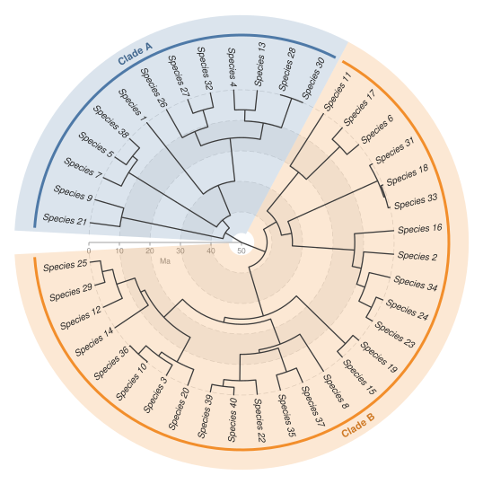

PlotPhyloTree.jl
Phylogenetic tree figures in pure Julia. Build a figure from a tree, add layers (clade highlights and labels, support values, node pies, age bars, time scales, heatmap and bar rings, images, legends), then write it as SVG, PNG, PDF, TikZ or CeTZ (Typst), or draw it into a Makie figure.
Layouts: rectangular (any direction), slanted, dendrogram, circular and fan. Trees are read and manipulated with PhyloIO.jl, whose API is re-exported.
Installation
using Pkg
Pkg.add("PlotPhyloTree")Example
using PlotPhyloTree, Random
tree = randtree(40; rng=Xoshiro(2), height=50, labels=["Species_$i" for i in 1:40])
ladderize!(tree)
p = treeplot(tree; layout=:circular, italic=true)
highlight!(p, tipnames(tree)[1:9]; label="Clade A")
highlight!(p, tipnames(tree)[24:33]; label="Clade B")
timescale!(p; title="Ma")
p
savefig("tree.svg", p) # .svg, .html, .tex, .tikz, .typ
using Librsvg_jll # for .png and .pdf
savefig("tree.png", p)In VS Code, Jupyter and Pluto a TreePlot displays inline; in a terminal REPL it opens in the browser.